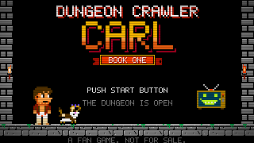
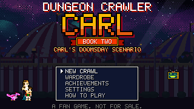

The first book as a 1987 cartridge. Punch your way through the Murder Dozer, the Hoarder, the goblin workshop, the Juicer and the Ball of Swine, then a cinderblock maze where the cameras go live. Cutscenes between stages, loot boxes, a rude System AI, and a cat who outranks you.

Carl's Doomsday Scenario as a late-life cartridge with the extra sound chip. Eight days on a clock, an undead circus, a topless half-elf whose charm turns Carl's boxers into a circus tent, a talk show, a murdered-hooker mystery in a bird town, and a soul crystal that is about to go off. Your Book One crawler walks in with their level, stats and every piece of gear.
The first, much-too-big version: nine floors, overworld maps from Floor 3, skins and companions. Kept for posterity. Separate saves from the book games.